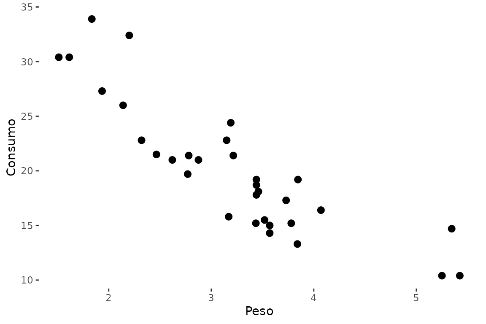

Temas e exportação de figuras científicas
Source:vignettes/graficos-publicacao.Rmd
graficos-publicacao.RmdTemas
p <- ggplot2::ggplot(mtcars, ggplot2::aes(wt, mpg)) +
ggplot2::geom_point(size = 2.5) +
ggplot2::labs(x = "Peso", y = "Consumo")
theme_transparent() e trans
p + trans
theme_transparent()
#> <theme> List of 6
#> $ legend.background : <ggplot2::element_rect>
#> ..@ fill : chr "transparent"
#> ..@ colour : NULL
#> ..@ linewidth : NULL
#> ..@ linetype : NULL
#> ..@ linejoin : NULL
#> ..@ inherit.blank: logi FALSE
#> $ legend.box.background: <ggplot2::element_rect>
#> ..@ fill : chr "transparent"
#> ..@ colour : NULL
#> ..@ linewidth : NULL
#> ..@ linetype : NULL
#> ..@ linejoin : NULL
#> ..@ inherit.blank: logi FALSE
#> $ panel.background : <ggplot2::element_rect>
#> ..@ fill : chr "transparent"
#> ..@ colour : NULL
#> ..@ linewidth : NULL
#> ..@ linetype : NULL
#> ..@ linejoin : NULL
#> ..@ inherit.blank: logi FALSE
#> $ panel.grid.major : <ggplot2::element_blank>
#> $ panel.grid.minor : <ggplot2::element_blank>
#> $ plot.background : <ggplot2::element_rect>
#> ..@ fill : chr "transparent"
#> ..@ colour : logi NA
#> ..@ linewidth : NULL
#> ..@ linetype : NULL
#> ..@ linejoin : NULL
#> ..@ inherit.blank: logi FALSE
#> @ complete: logi FALSE
#> @ validate: logi TRUE
ExportTimes()
A função exporta uma figura individual. Os padrões históricos são 20 × 15 cm e 600 dpi para os formatos raster, mas todos esses valores podem ser alterados.
Exemplo 1: PNG e SVG
ExportTimes(
p + theme_nogrid(),
"figuras/Figura_1",
formats = c("png", "svg")
)Exemplo 2: TIFF
ExportTimes(
p + theme_nogrid(),
"figuras/Figura_1",
formats = "tiff",
compression = "lzw"
)Exemplo 3: fundo transparente
ExportTimes(
p + trans,
"figuras/Figura_transparente",
formats = c("png", "svg"),
bg = "transparent"
)
export_figuras()
A função aplica ExportTimes() a uma lista nomeada.
p2 <- ggplot2::ggplot(iris, ggplot2::aes(Species, Sepal.Length)) +
ggplot2::geom_boxplot() + theme_nogrid()Exemplo 1
export_figuras(list(fig1 = p, fig2 = p2), "figuras", formats = "png")Exemplo 2
export_figuras(list(fig1 = p, fig2 = p2), "figuras", formats = c("png", "tiff", "svg"))Exemplo 3
export_figuras(
list(fig1 = p + trans, fig2 = p2 + trans),
"figuras_transparentes",
formats = c("png", "svg"),
bg = "transparent"
)Recomendações de uso
Para variáveis contínuas, prefira mostrar observações ou distribuição
juntamente com estimativas e incerteza. plot_emmeans() e
plot_reg() foram adicionadas justamente para facilitar esse
padrão de apresentação.